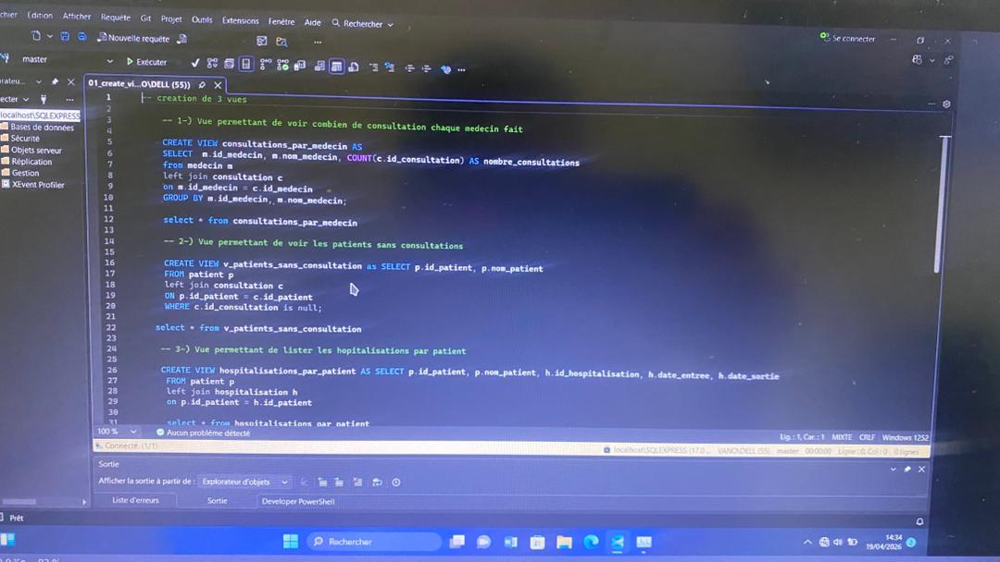
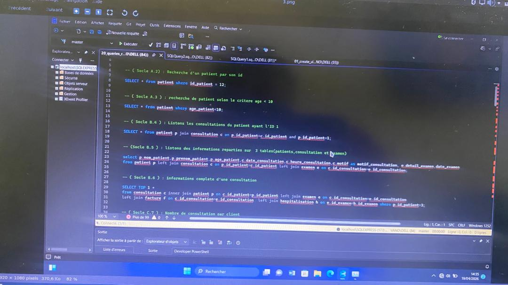
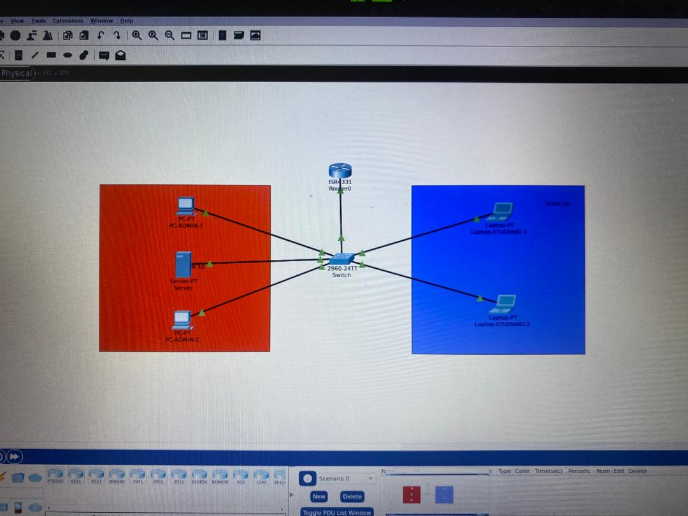

Filière : Réseaux & Sécurité Informatique (1ère Année)
Nom : MIDAGBODJI
Prénoms : KOAMI DAVID
Matricule : ESIG-03237-2025
Promotion : 2025-2026
Au cours du semestre, j’ai poursuivi ma formation en réseaux et sécurité informatique en consolidant mes connaissances théoriques et en développant des compétences pratiques à travers des travaux dirigés, des projets et des SAE (Situations d’Apprentissage et d’Évaluation).
Ce semestre m’a permis de mieux comprendre le fonctionnement des systèmes informatiques, des réseaux et des mécanismes de sécurisation. J’ai également appris à utiliser différents outils professionnels et à travailler sur des projets concrets, notamment la mise en place d’une infrastructure réseau,Base de donnée,etc.
À travers ces expériences, j’ai développé une approche plus rigoureuse du travail, une capacité d’analyse technique et une meilleure autonomie. Ce portfolio présente un bilan structuré de mes compétences, de mes acquis et de mon évolution dans le cadre de mon projet professionnel orienté vers la cybersécurité.
Compétences développées :
Cours/activités :
Analyse réflexive : Ces compétences me permettent de mieux comprendre le fonctionnement des applications et constituent une base importante pour la cybersécurité.
Compétences développées :
Compétences développées :
Compétences développées :
Compétences développées :
Savoirs acquis :
SQL et gestion des données :
Gestion d’une base de données pour une clinique.



Ce semestre m’a permis de développer des compétences solides en réseaux, systèmes et sécurité informatique.
Je souhaite continuer dans la cybersécurité et renforcer mes compétences professionnelles.
Email : lemineurdiarra@gmail.com
GitHub : https://github.com/lemineurdiarra-droid